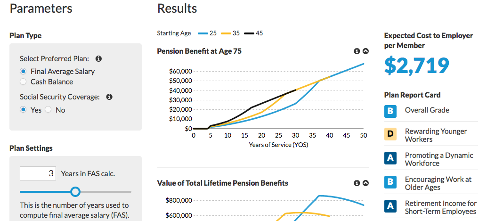
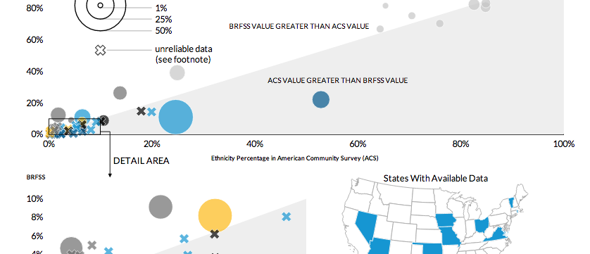
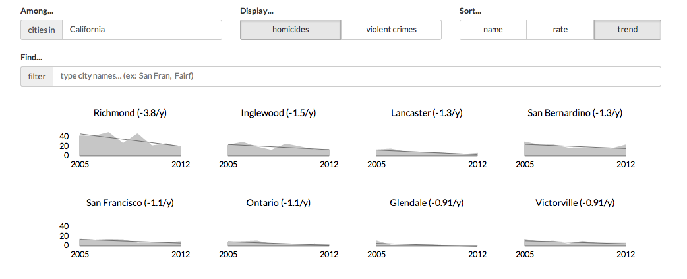
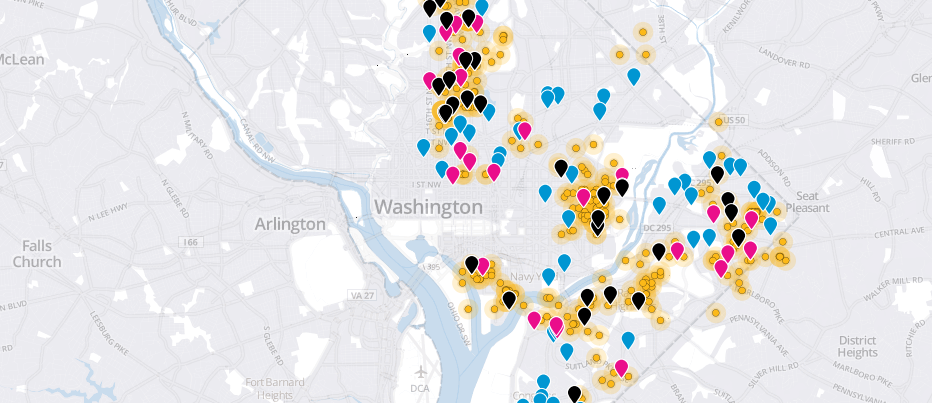
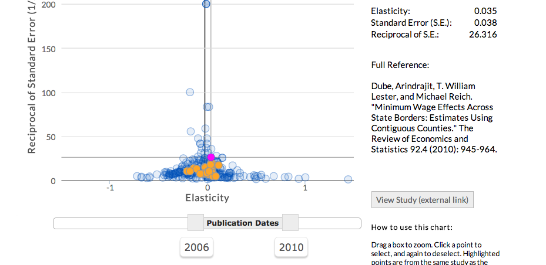
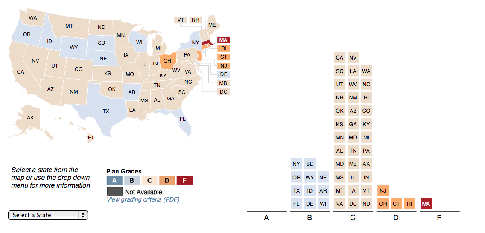

Vizualization
Build Your Own Pension Plan

Vizualizing Gaps in Domestic Violence Data

Crimes in US Cities

Gun Violence in Washington DC

Minimum Wage Meta-analysis

SLEPP Report Card

Thoughts
| Date | Subject |
|---|
Bibliography
About
I'm Ben, currently a research assistant at the Urban Institute in Washington D.C. and a graduate of Carleton College. I like tinkering with CoffeeScript for data vizualization, and Python and Julia for statistical programming.